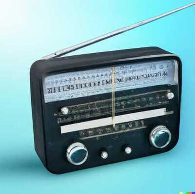

Da voz São José para o radio

Quando em Penalva ainda não contávamos com uma estação de rádio e nem com carros de som permanentes, nos anos 9O, iniciei o serviço de alto-falante, cujo nome fiz uma homenagem ao padroeiro da cidade " Voz São José". Eram 4 projetores potentes. E o estúdio ficava na casa dos meus pais na rua Dr.Djalma Marques, 417, com muito entretenimento, muita música, show de calouros, entrevistas e informações. Era tudo gratuito, feito com carinho. E desse tempo como registro, ficou somente a história oral e dois avisos, feitos ainda em máquina de datilografia. Um deles foi o pedido do amigo "Secretário de Administração" do Governo de Derze Barros, o Antonio Barros , para que divulgasse notas de interesse local; outro, porém, foi um Ofício de nr. 3O/94 assinado pela então Juíza da nossa Comarca, a Exma. Dra.Ermília dos Reis Ribeiro, em 22.08.1994, quando a mesma solicitou que eu divulgasse avisos importantes para a população.

Com o passar do tempo se aproximava a eleição local, Stélio Gama foi candidato a Vereador, pediu que eu fizesse uma entrevista com ele, para esclarecer dúvidas aos ouvintes que estavam prestes a se aposentarem, por contribuição, tempo de serviço, sindicato, etc, já que até então, ele era funcionário do INSS licenciado. Pois bem, a entrevista segue, bom papo, lá chegou um Oficial de Justiça, a mando do juiz Dr.Gonçalo, dizendo que, aquela entrevista, subtendia a uma Propaganda Política, embora não tivéssemos fugido uma só pergunta ou resposta que não fosse sobre o que fora anunciado. Mas, em obediência ao "Juiz", encerramos a entrevista. Deu vontade de parar as nossas atividades, mas depois soube que foi uma denúncia anônima quando tive que me apresentar ao gabinete do Juiz Eleitoral. O Fórum nesse tempo, funcionava onde é o prédio da Câmara de Vereadores.
Entretanto, Nos anos 96, chega a rádio Tarumã-FM, tendo como Diretor Carlos Alberto de Sá Barros (Cabé), a convite do Dr.Lourival Gama para ser o Diretor. Ele logo foi me visitar durante a programação, só lembro que ele colocava a mão em um dos lados dos ouvidos e pude perceber uma certa inquietação, enquanto eu não baixasse o volume do amplificador, mas disse que precisava falar comigo depois da programação. Fui ao local marcado, recebi o convite, para ser locutor de uma rádio que seria instalada em Penalva, mas eu teria que fazer um teste por meio da leitura de uma matéria do Jornal " O Estado do MA". E então fiz a leitura gravada para ser aprovado ou não, pois, não tive dificuldades, já que sabia usar o microfone, manter a respiração controlada, impostação de voz, palavras bem pronunciadas, certo que passei no teste. O texto, continha algumas palavras que precisavam de leves pausas para a boa compreensão do texto e não serem lidas de um só fôlego. E pude perceber que, algumas pegadinhas, como (mecha e Revista Newsweek), iriam atrapalhar alguns candidatos. Cabé era rigoroso, mania de perfeccionista e, não foi por acaso, que foi antes Diretor da Rádio Educadora de São Luís-MA, teve passagem pela Rádio Universidade. Todavia, com os preparativos para a inauguração da emissora, tive que me afastar do Serviço de Alto-Falante.
A Rádio Tarumã-FM, inaugurou em 28.09.1996, na Ponta do Abelin, no Bairro São Pedro, nas proximidades das margens do Lago Cajari, logo bem cedo, com uma espécie de mesa redonda, apresentada por Cabé, com membros do Clube de Mães Nossa Senhora da Conceição, Associação essa, atrelada a emissora, com Dona Clara Arouche, Maria Joaquina, Dr. Carlos Gama, Geane Gama e Padre Cordeiro. Nessa coletiva, foram discutidas políticas públicas que pudessem melhorar a nossa cidade em diversos setores da sociedade. O Pe Cordeiro, como sempre, se sobressaiu na oratória e com boas ideias. Nada foi gravado, até porque não tínhamos recursos para isso. Os primeiros locutores fundadores, foram: James Cunha, Júlia Grabriela, Francisco Silva de Oliveira, Nilde Nabate e Marly Bahia. No dia seguinte, começava a programação diária. Eu apresentando o primeiro programa da Rádio, com o "Acorda Penalva " das 05H00 às 08H00 da manhã. E a tarde apresentava o " Canto Brasileiro". Depois de um certo tempo, apresentei somente o Show da Manhã, sempre com excelente aceitação popular. Ainda tínhamos a programação das Igrejas. O Dr.Raimundo Balby foi convidado para apresentar "A música e os Músicos do Maranhão", com muito sucesso, tendo na sonoplastia o Adelino Silva. Hoje, portanto, estamos diante da tecnologia visual(som e vídeo), livros físicos dividindo espaços com as publicações e leituras digitais, tudo isso e muito mais viralizando com muita rapidez e, assim segue esse paradigma que não para mais, com seus benefícios e malefícios em nosso dia a dia, cabendo a cada um filtrar seus conteúdos com sabedoria aproveitando o que há de bom e deletar o prejudicial. O amanhã não espera, passa!